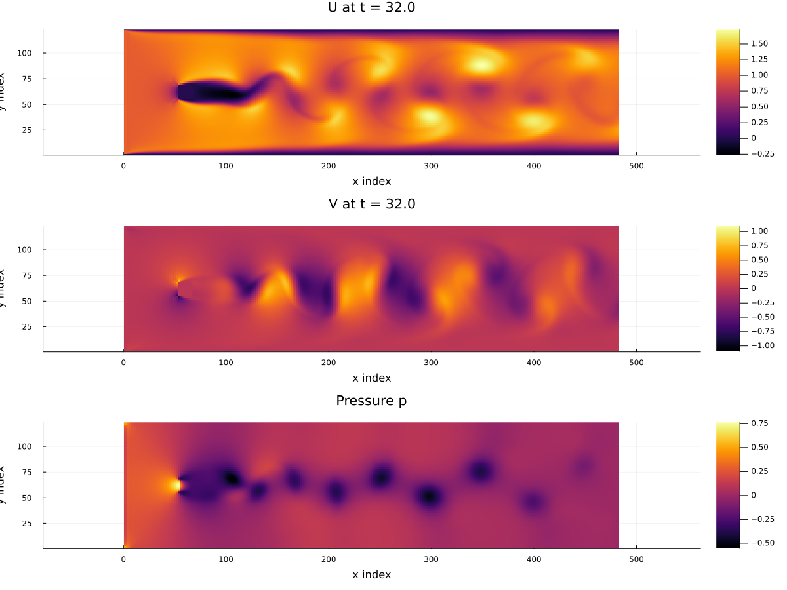

2D Channel Flow with a Cylinder
This example solves the two-dimensional incompressible Navier-Stokes equations in a channel using MOLE mimetic operators and a projection (pressure-correction) method.
The cylinder obstacle is introduced as a masked no-slip region inside the channel. To make things easy, the current implementation uses an axis-aligned masked block of cells rather than a fitted curved boundary. The purpose of this example is to show how MOLE operators can be combined to build a transient incompressible flow solver in a direct and compact way.
Governing Equations
We solve the incompressible Navier-Stokes equations
\[\begin{equation} \frac{\partial \mathbf{u}}{\partial t} + (\mathbf{u}\cdot\nabla)\mathbf{u} = -\frac{1}{\rho}\nabla p + \nu \nabla^2 \mathbf{u} \end{equation}\]
\[\begin{equation} \nabla \cdot \mathbf{u} = 0 \end{equation}\]
where $\mathbf{u} = (u,v)$ is the velocity field, $p$ is the pressure, $\rho$ is the density, and $\nu$ is the kinematic viscosity.
Spatial Domain
The computational domain is
\[\begin{equation} x \in [0,8], \qquad y \in [-1,1] \end{equation}\]
The default grid is $m = 41$ cells in the $x$-direction and $n = 11$ cells in the $y$-direction.
The Reynolds number is defined through
\[\begin{equation} \nu = \frac{U_{\mathrm{init}} D_0}{Re} \end{equation}\]
with the default values $Re = 200$ and $U_{\mathrm{init}} = 1$.
Initial and Boundary Conditions
Initial Conditions
At $t = 0$,
\[\begin{equation} u = U_{\mathrm{init}}, \qquad v = 0 \end{equation}\]
in the fluid region, and the masked obstacle region is initialized with
\[\begin{equation} u = 0, \qquad v = 0 \end{equation}\]
Velocity Boundary Conditions
Inlet (left): Dirichlet inflow
\[\begin{equation} u = U_{\mathrm{init}}, \qquad v = 0 \end{equation}\]
Outlet (right): zero streamwise gradient
\[\begin{equation} \frac{\partial u}{\partial x} = 0, \qquad \frac{\partial v}{\partial x} = 0 \end{equation}\]
Top and bottom walls: no-slip
\[\begin{equation} u = 0, \qquad v = 0 \end{equation}\]
Obstacle mask: no-slip
\[\begin{equation} u = 0, \qquad v = 0 \end{equation}\]
Pressure Boundary Conditions
During the pressure Poisson step,
Outlet (right): reference pressure
\[\begin{equation} p = 0 \end{equation}\]
All other boundaries: homogeneous Neumann
\[\begin{equation} \frac{\partial p}{\partial n} = 0 \end{equation}\]
Numerical Method
A projection method is used to enforce incompressibility.
This is the same overall time-stepping strategy used in both the Octave and C++ implementations.
Time Integration
The momentum equation is advanced with a mixed time discretization:
- the convective term is treated explicitly with AB2 (Adams-Bashforth 2)
- the first time step uses AB1
- the diffusive term is treated implicitly with Crank-Nicolson
The convective term is nonlinear, so an explicit AB2 treatment keeps the method simple and avoids solving a nonlinear system at each time step. The diffusive term is linear and is treated with Crank-Nicolson to obtain a stable and second-order accurate semi-implicit update.
As a result, the intermediate velocity solve uses the matrices
\[\begin{equation} M = I - \frac{1}{2}\Delta t \, \nu L, \qquad M_p = I + \frac{1}{2}\Delta t \, \nu L \end{equation}\]
which are the Crank-Nicolson diffusion matrices used in the Helmholtz-type solves for $u^*$ and $v^*$.
Intermediate Velocity
An intermediate velocity $\mathbf{u}^*$ is computed first from the momentum equation using the explicit convective update and the semi-implicit diffusive update.
Pressure Poisson Equation
The pressure is then obtained from
\[\begin{equation} \nabla^2 p^{n+1} = \frac{\rho}{\Delta t}\nabla \cdot \mathbf{u}^* \end{equation}\]
Velocity Correction
The velocity is corrected by
\[\begin{equation} \mathbf{u}^{n+1} = \mathbf{u}^* - \frac{\Delta t}{\rho}\nabla p^{n+1} \end{equation}\]
Re-application of Velocity Boundary Conditions and Mask
After the pressure correction step, the code re-applies the velocity boundary values and the obstacle mask.
This is done because the projection step updates the full cell-centered velocity field. Re-applying these values ensures that the final updated velocity satisfies the intended inlet, wall, outlet, corner, and masked-region constraints exactly.
Role of the MOLE Operators
This example is intended to highlight how MOLE operators are used in an incompressible flow solver.
The main operators are
- Laplacian $L$: used for viscous diffusion
- Divergence $D$: used in the convective flux form and in the pressure Poisson right-hand side
- Gradient $G$: used in the pressure correction step
- Interpolation operators: used to map between cell-centered values and face-based quantities for flux evaluation and projection
These operators are combined to build
- the Crank-Nicolson diffusion operators
- the pressure Poisson operator
- the interpolation maps needed for face fluxes and pressure-gradient correction
Running the Example
To run a high-resolution (with m = 481 and n = 121) version of this example, from the mole/julia/MOLE.jl directory execute the script with the following command line options:
MOLE_CYLINDER_M=481 MOLE_CYLINDER_N=121 MOLE_CYLINDER_DT=0.005 MOLE_CYLINDER_TSPAN=32.0 MOLE_CYLINDER_PLOT=true julia --project=. examples/Navier-Stokes/cylinder_flow_2D.jlResults
Julia implementation result
